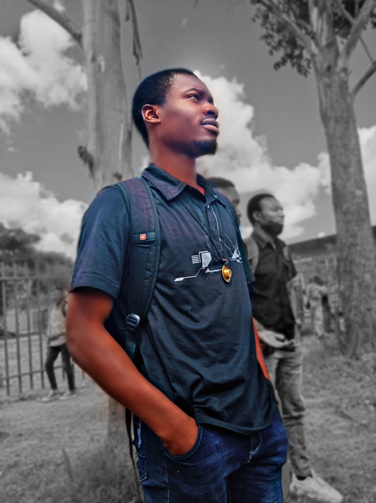

Je me nomme Victoire MUKADI SUMBANGA, Je suis né au Congo (RDC) précisément à Lubumbashi, le 03 MAI 2001; CONGOLAIS de père et de mère et je suis issu d’une famille de 6 personnes dont je suis le 2ème.
Nous re sommes pas venue directement du ciel mais nous sommes fils et filles de Pierre NKUSU KAPYAMBA et Marceline MUSAU ILUNGA .